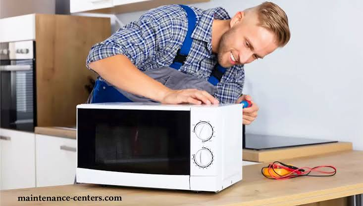
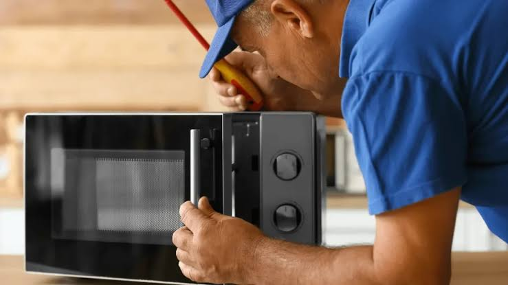

الميكروويف هو الجهاز الأساسي السريع في المطبخ لتسخين وطهي الطعام بكفاءة عالية، ويعمل بجهد كبير لضمان راحتك. ولانه يعمل بمنظومة موجات كهرومغناطيسية ودوائر إلكترونية دقيقة فانه يرسل إشارات إنذار مبكرة قبل أن يتوقف فجأة؛ ومن أبرز هذه العلامات عدم تسخين الطعام نهائياً، صدور أصوات صاخبة أو شرار كهربائي أثناء التشغيل، توقف الطبق الدوار عن الحركة، عدم استجابة الأزرار أو اللمس، انبعاث روائح احتراق أو أدخنة، أو انطلاق قاطع الكهرباء فور تشغيل الجهاز.
كل علامة من هذه العلامات توضح أن هناك مكوناً يعمل خارج نطاق كفاءته التصميمية، والتدخل المبكر يحمي قطع الغيار الرئيسية مثل الماجنترون، المحول (ترانس)، أو كارتة التحكم من التلف الكامل ويحافظ على ميزانيتك وسلامة منزلك.
تخضع أفران الميكروويف لظروف تشغيل صعبة مع تكرار الاستخدام اليومي لتسخين الأطعمة المختلفة، وتراكم الأبخرة والدهون داخل غرفة الطهي، إلى جانب تذبذب التيار الكهربائي المفاجئ، وهي عوامل تسرع من إجهاد الدائرة الكهربائية والكبائن الداخلية وتؤثر على كفاءة التسخين.
هذه الظروف تجعل الماجنترون، والمحول الكهربائي، وفيوز الحماية يعملون بجهد مضاعف، ولهذا فإن أغلب بلاغات الأعطال تتعلق بتلف الماجنترون واحتراق الفيوز، احتراق ميكا الحماية الداخلية بسبب الدهون، أو أعطال اللوحة الرقمية، وهي مشاكل نحلها بمهنية في زيارة منزلية واحدة.
الميكروويف يعتمد على منظومة ذكية تبدأ باستقبال التيار الكهربائي ورفع الجهد عبر المحول الكبير (الترانس) والمكثف، ليقوم الماجنترون بتوليد موجات كهرومغناطيسية بتردد عالٍ، وتنتشر هذه الموجات داخل غرفة الطهي عبر المروحة والموجه لتسخين جزيئات الماء في الطعام بالتساوي.
كارتة التحكم الإلكترونية واللائحة هما المسؤولان عن ضبط وقت الطهي ومستويات الطاقة بدقة، وأي خلل في هذه المنظومة يوقف التسخين تماماً أو يتسبب في توقف البرنامج.
الميكروويف الاقتصادي السعة الصغيرة (20 إلى 23 لتراً) يوفر مساحة ممتازة للمطابخ الضيقة وتناسب الاستخدام السريع اليومي مثل تسخين المشروبات والأطعمة البسيطة، ويستهلك كميات أقل من الطاقة.
أما الميكروويف الكبير المزود بشواية أو حمل حراري (سعة 28 إلى 42 لتراً وأكثر) فيتميز بقدرته الهائلة على شوي الأطعمة، إعداد المعجنات، واستيعاب الأواني الكبيرة دفعة واحدة، لكنه يتطلب مساحة عرض و تهوية مناسبة في المطبخ.

فحص دائرة الضغط العالي والماجنترون
إصلاح وصيانة الميكروويف بالمنزلالفارق بين تركيب قطعة غيار أصلية وأخرى مقلدة يظهر سريعاً في كفاءة التسخين وأمان الجهاز. تلتزم المؤسسة المعتمدة بتوريد وتركيب ماجنترونات، ترانسات، لوحات تحكم، وميكا أصلية 100% مع فاتورة رسمية، ويشمل الضمان ستة شهور كاملة على القطعة وعلى المصنعية المنفذة، مع زيارة مجانية تماماً إذا تكرر نفس العطل.
غالباً يرجع لتلف أو احتراق صفيحة الميكا الداخلية بسبب تراكم الدهون، أو استخدام أواني تحتوي على معادن أو خطوط ذهبية.
بسبب تلف صمام الماجنترون المسؤول عن توليد الموجات، احتراق الفيوز العالي، أو عطل في دائرة الضغط العالي.
نعم، 95% من أعطال الميكروويف (التسخين، الشرار، الطبق، الكارتات، والفيوزات) يتم إنجازها باحترافية تامة داخل منزلك بأمان تام.
تشغيل الميكروويف فارغاً يتسبب في انعكاس الموجات الكهرومغناطيسية واصطدامها بالماجنترون مباشرة مما يؤدي لاحتراقه وتلفه الكلي.
نعم بشكل أساسي لمنع تراكم الأبخرة والدهون التي تسبب احتراق الميكا وتوليد روائح كريهة أو شرار أثناء التشغيل.
تواجه مشكلة في جهازك؟ اختر العطل من القائمة أدناه لمعرفة الأسباب المحتملة وطرق الإصلاح، أو اتصل بنا مباشرة على 19580
الجهاز يعمل ويدور الطبق ولكن الطعام يخرج بارداً تماماً.
الأسباب المحتملة: تلف الماجنترون، احتراق الفيوز العالي، أو عطل بالترانس.
أصوات فرقعة وشرار ناري داخل غرفة الطهي أثناء التشغيل.
الأسباب المحتملة: تلف صفيحة الميكا، تراكم الدهون، أو استخدام معادن.
الطعام لا يدور وتتركز السخونة في مكان واحد بالأطراف.
الأسباب المحتملة: تلف موتور الدوران السفلي، أو كسر في تروس الحامل.
يفصل التيار الكهربائي بالمنزل بمجرد الضغط على زر البدء.
الأسباب المحتملة: قصر دائرة بمفاتيح الباب، أو تلف كابل الطاقة.
الشاشة واللوحة مطفية والجهاز صامت تماماً وكأنه غير موصول.
الأسباب المحتملة: احتراق الفيوز الرئيسي، عطل باب الجهاز، أو الكارتة.
ضوضاء واهتزاز شديد أثناء عمل محول الطاقة أو المروحة.
الأسباب المحتملة: تلف الترانس (المحول)، أو خلل بمروحة التبريد.
روائح مزعجة ودخان خفيف عند فتح الباب أو التسخين.
الأسباب المحتملة: تفحم بقايا طعام دهنية ملتصقة بالأسقف أو الميكا.
الأسعار المذكورة تقديرية لأعطال الميكروويف وتختلف حسب الموديل ونوع قطعة الغيار، ويتم إبلاغك بالسعر النهائي بعد الفحص وقبل بدء الإصلاح.
صيانة ميكروويف سامسونج (Samsung) خدمة منزلية كاملة يصل فيها إليك فني متخصص مجهز بالمعدات الحديثة وقطع الغيار الأصلية، ليتم الإصلاح أمامك من الزيارة الأولى، وهي الخدمة التي نالت بها المؤسسة المعتمدة ثقة آلاف العملاء.
فريقنا الفني منتشر في مختلف المحافظات والمناطق، لنضمن الوصول إليك أينما كنت في أسرع وقت ممكن.
التكلفة عندنا شفافة بالكامل: رسوم كشف معلنة وثابتة، وتكلفة إصلاح يتم الاتفاق عليها بعد التشخيص وقبل بدء أي عمل؛ لا توجد رسوم مخفية أو مفاجآت، وتحصل على فاتورة رسمية بكل التفاصيل.
قبل أي إصلاح نجري فحصاً شاملاً يشمل قياس الجهد، اختبار دائرة الضغط العالي، ومراجعة الحساسات؛ هذا التشخيص الدقيق يضمن معالجة السبب الجذري للعطل.
خدمتنا متاحة طوال أيام الأسبوع. اتصل الآن على 19580 واحصل على خدمة صيانة فورية ومضمونة.
صيانة ميكروويف إل جي (LG) بمعايير احترافية: كشف دقيق بأجهزة قياس حديثة، قطع غيار أصلية مناسبة لكل موديل، وفني مدرب يشرح لك سبب العطل قبل أي إصلاح — هذا ما يحصل عليه عملاء المؤسسة المعتمدة في كل زيارة.
نلتزم بتقديم تقرير فني مفصل عن حالة الجهاز والأجزاء التي تحتاج إصلاحاً أو استبدالاً، مع فاتورة رسمية وضمان مكتوب على كل عملية صيانة.
تشمل خدمتنا جميع أنواع أعطال الميكروويف دون استثناء: الماجنترونات، الترانسات، لوحات التحكم، بالإضافة إلى أعمال الصيانة الدورية التي تطيل عمر الجهاز.
كل إصلاح مشمول بضمان شامل على العمل والقطع، وأسعارنا عادلة ومعلنة بدون أي زيادات. اطلب فنياً الآن على 19580.
صيانة ميكروويف شارب (Sharp) خدمة منزلية متكاملة يصل فيها إليك فني متخصص مجهز بأحدث أدوات الفحص وقطع الغيار الأصلية، ليتم الإصلاح أمامك من الزيارة الأولى.
يستخدم فنيونا أجهزة القياس والتشخيص الإلكتروني لتحديد الأعطال بدقة متناهية، مما يوفر عليك الوقت والمال ويضمن إصلاحاً صحيحاً من المرة الأولى.
فريق خدمة العملاء متاح يومياً للرد على استفساراتك وتحديد المواعيد بمرونة تامة عبر الهاتف أو الواتساب أو من خلال موقعنا الإلكتروني.
نمنح ضماناً حقيقياً على الإصلاح وقطع الغيار المستبدلة يصل إلى 6 شهور كاملة. للحجز اتصل بالخط الساخن 19580.
عندما يتعطل جهازك فجأة فأنت تحتاج صيانة ميكروويف تورنيدو (Tornado) من جهة موثوقة تصلك بسرعة؛ لهذا يعتمد آلاف العملاء على الفنيين المعتمدين لدى المؤسسة المعتمدة في إصلاح أعطالهم داخل المنزل دون نقل الجهاز.
لدينا خبرة تراكمية واسعة في إصلاح جميع أعطال الميكروويف مهما كانت بسيطة أو معقدة، بما في ذلك مشاكل التسخين والشرار والطبق.
قبل أي إصلاح نجري فحصاً دقيقاً يشمل الماجنترون، الترانس، ونظام الأمان؛ لضمان معالجة المشكلة من جذورها وعدم تكرارها نهائياً.
لا تتردد في التواصل معنا على 19580 للحصول على استشارة فنية مجانية وحجز موعد الصيانة في الوقت المناسب لك.
صيانة ميكروويف باناسونيك (Panasonic) لم تعد مهمة صعبة أو مكلفة؛ فبفضل شبكة فنيين تغطي جميع المناطق وخبرة طويلة، توفر لك المؤسسة المعتمدة إصلاحاً سريعاً بقطع أصلية وأسعار عادلة ومعلنة.
نلتزم بتقديم تقرير فني مفصل عن حالة الجهاز والأجزاء التي تحتاج صيانة، مع فاتورة رسمية وضمان مكتوب على الخدمة.
تشمل خدمتنا كافة أعطال الميكروويف الصغيرة والكبيرة مع توفير حلول فورية لكل المشاكل الفنية بالمنزل.
كل إصلاح مشمول بضمان شامل، وأسعارنا واضحة وثابتة. اطلب فنياً الآن على 19580.
صيانة ميكروويف كينوود (Kenwood) خدمة منزلية متخصصة تتعامل مع الدوائر الإلكترونية المتقدمة والكارتات الذكية بأعلى كفاءة، مع توفير قطع الغيار الأصلية المعتمدة وبرامج التشغيل الأصلية.
فريقنا مدرب خصيصاً على التعامل مع التقنيات الحديثة في أفران ميكروويف كينوود لتوفير تشخيص سريع وإصلاح دقيق من الزيارة الأولى.
نقدم ضماناً معتمداً لمدة 6 شهور على جميع أعمال الإصلاح والقطع المستبدلة لراحة بالك التامة. اتصل بنا على 19580.
صيانة ميكروويف وايت ويل (White Whale) خدمة منزلية كاملة يصل فيها إليك فني متخصص مجهز بالمعدات وقطع الغيار الأصلية، ليتم الإصلاح أمامك بكل احترافية وأمان.
يستخدم فنيونا أحدث أجهزة قياس الضغط والدوائر الكهربائية لتحديد الأعطال بدقة متناهية، مما يوفر عليك الوقت والجهد ويضمن كفاءة التسخين بنسبة 100%.
خدمتنا متاحة طوال أيام الأسبوع. اتصل الآن على 19580 واحصل على خدمة صيانة فورية.
نغطي محافظات الدلتا بالكامل. اختر محافظتك أو مدينتك.
سواء بتقول صيانة ميكروويف أو بأي صيغة تانية، الخدمة واحدة والرقم واحد: 01289966660
كل فني مدرب على أعطال الميكروويف ودوائر الضغط العالي والماجنترون تحديداً والمكونات الدقيقة، وليس فنياً عاماً لكل شيء.
نستخدم قطع غيار أصلية ومضمونة 100% مع إطلاعك على القطعة القديمة قبل استبدالها.
ضمان مكتوب على المصنعية وقطع الغيار، وإعادة الزيارة مجاناً لو تكرر نفس العطل.
نود التوضيح الكامـل لعملائنا الكرام أن مؤسسة المعتمد جروب هي مركز خدمة وصيانة معتمد خارجي للأجهزة المنزلية، ولسنا الشركة الرئيسية أو الوكيل الحصري المصنّع للعلامات التجارية المختلفة؛ نحن نقدم خدمات الصيانة الفورية، الإصلاح، وتوفير قطع الغيار الأصلية بكفاءة عالية وبخبرة فنية متخصصة لراحة عملائنا.
في مؤسسة المعتمد جروب، نُدرك تماماً أهمية خصوصيتك ونلتزم التزاماً كاملاً بحماية بياناتك الشخصية بكل أمان وشفافية تامة أثناء طلبك لخدمات الصيانة المنزلية.
جميع البيانات التي تقدمها لنا (مثل: الاسم، رقم الهاتف، والعنوان التفصيلي) تُستخدم حصرياً لتنفيذ طلب الصيانة وتوجيه الفريق الفني المعتمد لمنزلك في أسرع وقت، ولا يتم مشاركتها أبداً مع أي طرف ثالث.
نستخدم أحدث تقنيات التشفير الرقمي وبروتوكولات الأمان لضمان حماية وسائط الاتصال بين جهازك وموقعنا، مما يمنع أي محاولات لاعتراض أو استطلاع بياناتك أثناء التصفح أو إرسال طلبات الصيانة.
تستعين منصة المعتمد جروب بملفات تعريف الارتباط البسيطة لتحسين تجربتك في تصفح الموقع، تذكر تفضيلاتك، وتقديم محتوى ملائم وسريع يلبي احتياجاتك الفنية فوراً.
قد نستخدم رقم هاتفك للتواصل معك فقط بشأن حالة طلب الصيانة الخاص بك، أو إرسال تفاصيل الفاتورة والضمان المعتمد، مع الاحتفاظ بحقك الكامل في طلب مراجعة، تعديل، أو حذف بياناتك في أي وقت.